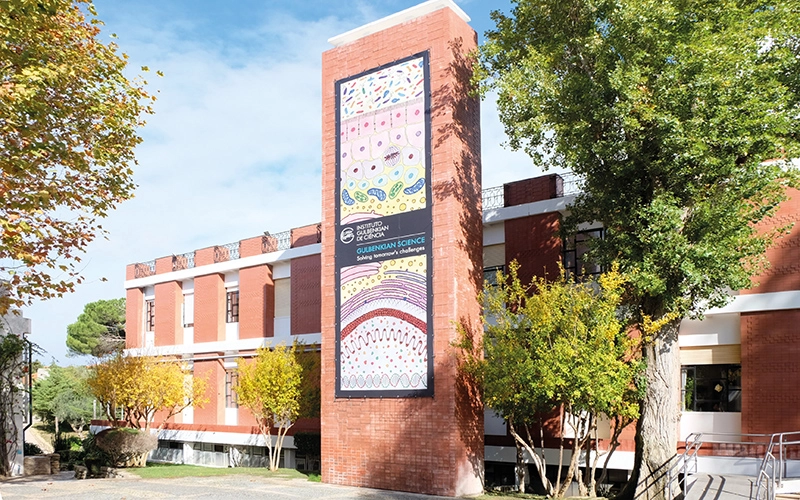

GTPB/IBB21 GTPB/IBB21

Course Description and Learning Objectives
This course provides a contact with a set of themes that illustrates the role of Bioinformatics in Biomedical research: tools and data resources, RNA-seq for differential gene expression, genomes and their annotation, genome alignment and variant calling, and single cell RNA-seq. This exposure to a diversity of techniques is then complemented with a daylong session about automation of analytical tasks using scripting in Unix shell and Python. The course content invites IBB students to an encompassing, integrated vision of Bioinformatics approaches in the scope of Open Science, collaborative work, hypothesis generation and testing.
Detailed Schedule
- Day 1, Introduction to Bioinformatics, RNA-seq Data
- Day 2, Handling Sequence Data
- Day 3, Variant Calling
- Day 4, Single Cell RNA-seq
- Day 5, Using Scripts to Automate Bioinformatics Data Analysis
Monday, May 2nd
Introduction to Bioinformatics, Sequence Data, RNA-seq
09h30-11h00: Introduction (Pedro Fernandes)
11h30-12h30: Resources and file formats of Bioinformatics (Jingtao Lilue)
14h00-16h00: RNA-seq analysis with the Linux command line (Jingtao Lilue)
16h30-18h00: Wrap-up (Pedro Fernandes)
Tuesday, May 3rd
09h30-11h00: Introduction to NGS Data and FASTQ format (Ricardo Leite)
11h30-12h30: Brief overview of Galaxy platform (tools, workflows…) (Ricardo Leite)
14h00-16h00: Assembly of a bacterial genome (Ricardo Leite)
16h30-18h00: Gene Annotation and taxa identification (Ricardo Leite)
Wednesday, May 4th
Variant calling / Single Cell RNA-seq
09h30-11h00: Principles of Variant Calling (Daniel Sobral)
11h30-12h30: Genome Alignment and Variant Calling (Daniel Sobral)
14h00-16h00: Variant Calling Using Breseq (Daniel Sobral)
16h30-18h00: Discussion of Variant Calling Results (Daniel Sobral)
Thursday May, 5th
09h30-11h00: Principles of Single-Cell RNA-Seq Analysis (Daniel Sobral)
11h30-12h30: Running the seurat basic tutorial (Daniel Sobral)
14h00-16h00: Running the analysis from Póvoa et al. (2021) (Daniel Sobral)
16h30-18h00: Discussion (Daniel Sobral)
Friday, May 6th
Using Scripts to Automate Bioinformatics Data Analysis
09h30-11h00: Scripting for automation (Gonçalo Leiria)
11h30-12h30: Scripting in bash (Gonçalo Leiria)
14h00-16h00: Scripting in Python (Gonçalo Leiria)
16h30-18h00: Final wrap-up (Pedro Fernandes, Gonçalo Leiria)
Instructors
- Pedro Fernandes
- Jingtao Lilue
- Ricardo Leite
- Daniel Sobral
- Gonçalo Leiria
Note: Bioinformatics hands-on training happens regularly at the IGC. A variety of themes is offered using consistent methods for the design and delivery of training courses. Please check this website.
Webpage created by Goncalo Leiria.
Source code available on github.

Web_course_template by GTPB is licensed under a Creative Commons Attribution 4.0 International License.